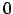

Teseo2 associates to the working image some information related to seismogram paper, seismic event, station data and vectorisation parameters. All these information are saved in a
 and have to be referred to a single seismic event.
and have to be referred to a single seismic event.
First time Teseo2 starts on a image, it requires to create a new session filling the fields shown in the figures 2, 3, 4, and pressing on the OK button.
Session properties can be modified at any time selecting File Session Properties (Ctrl+R in Teseo2 context). New sessions related to other events in the same image can be created selecting File Session New (Ctrl+N). Teseo2 use a fixed session naming convention, so the user can't change session file name.
Starting Teseo2 on a image associated to more sessions, user can choose the preferred one.
![\includegraphics[width=10cm]{images/snapshot6.eps}](img4.png)
![\includegraphics[width=10cm]{images/snapshot7.eps}](img5.png)